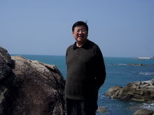

申报材料 >公文写作教授
申报材料 >公文写作教授

严强 ，男，1948年生，教授、博士生导师。1977年考入南京大学哲学系，1982年获学士学位，毕业后留校任教至今。现任国家教育部高教司政治学类课程教学指导委员会委员；中国公共政策研究会常务理事；南京市邓小平理论研究会副会长；北京大学政府管理学院兼职教授；中国矿业大学、南京信息工程大学、南京农业大学、杨州大学、安徽工业大学、海南大学兼职教授；南京大学公共事务与政策研究所所长。研究方向：公共政策、国际政治。